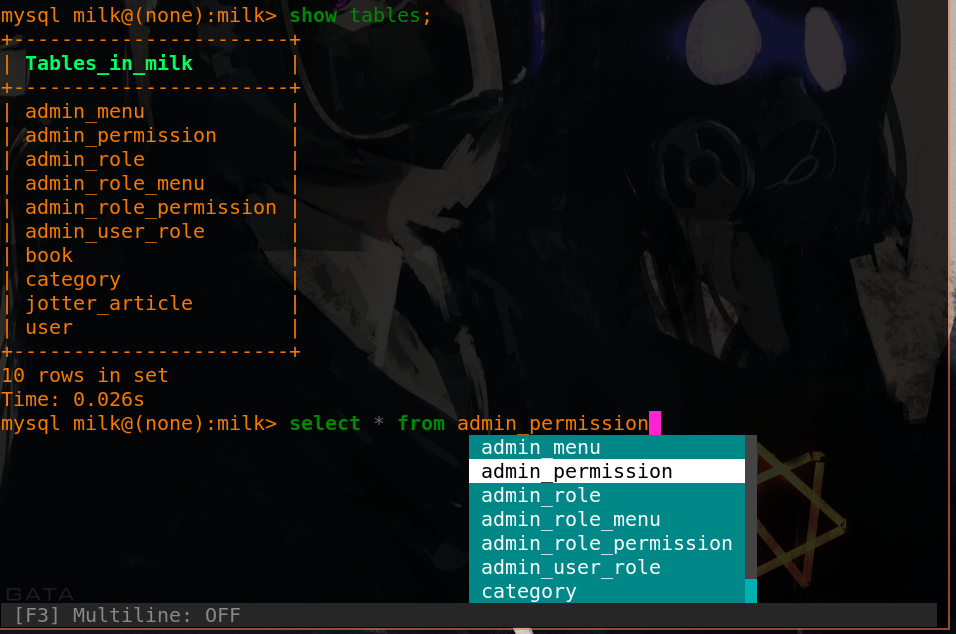
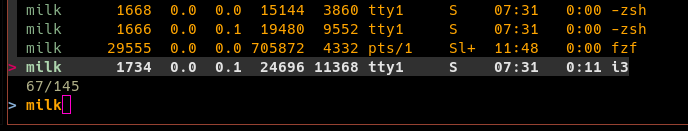
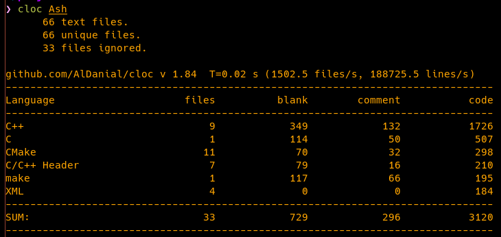
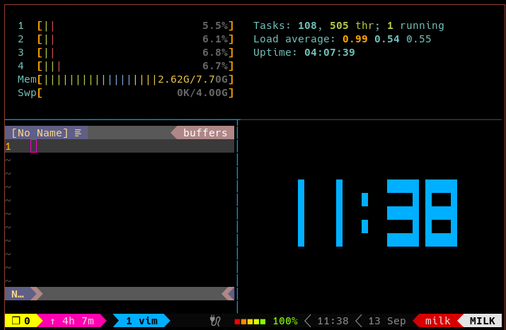
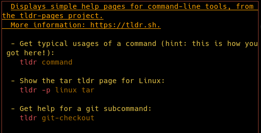
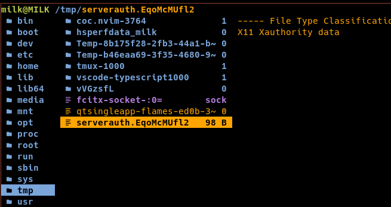

Linux工具
写在前面
Linux上一些常用的工具。
例如：可以自动补全的mysql工具mycli，交互式搜索的fzf，代码统计工具cloc…
mycli
mysql客户端，支持语法高亮和命令补全，运行在Terminal上。

fzf
命令行下模糊搜索工具，交互式智能搜索并选取文件或内容。

cloc
代码统计工具

ccache
高速C/C++编译缓存工具，提高编译速度。
gcc foo.c
ccache gcc foo.ctmux
终端复用

tldr
简略的man文档
需要额外配置颜色输出
文件：~/.tldrrc
{
"themes": {
"my": {
"commandName": "bold, cyan",
"mainDescription": "underline",
"exampleDescription": "yellow",
"exampleCode": "red",
"exampleToken": "dim"
}
},
"theme": "my"
}
ranger
Terminal上的文件系统。无桌面环境也能使用。

comment:
- Valine
- LiveRe
- ChangYan